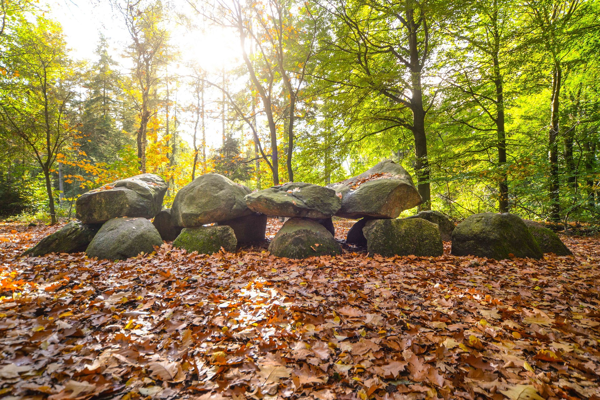

Groningen
Groningen is een stad in het noorden van Nederland en is de hoofdstad van de provincie Groningen. Het is bekend om zijn rijke historie en culturele erfgoed, waaronder het prachtige Martinitoren-uitkijkpunt en het Groninger Museum. De stad is ook bekend om zijn levendige studentensfeer, met veel universiteiten en hogescholen en een grote jonge bevolking. Bovendien biedt Groningen een aangename levensstijl, met veel groen en water, en een breed scala aan winkels, restaurants en uitgaansgelegenheden. In één zin: Groningen is een bruisende stad vol historie, cultuur en vermaak.

Friesland
Friesland is een provincie in het noorden van Nederland en is beroemd om haar unieke cultuur en geschiedenis. Het is bekend om zijn prachtige natuur, met meren, grachten en de Waddenzee, en is een populaire bestemming voor toerisme en recreatie. De Friese taal en tradities, zoals koetjesreiden en de elfstedentocht, zijn een belangrijk onderdeel van de Friese identiteit. Friesland is ook bekend om haar steden, zoals Leeuwarden, de hoofdstad van de provincie en culturele hoofdstad van Europa in 2018, en Sneek, een historische stad met prachtige grachten en monumenten. Kortom, Friesland is een unieke en prachtige regio in Nederland, vol cultuur, natuur en vermaak.
Drenthe
Drenthe is een provincie in het noordoosten van Nederland, bekend om haar adembenemende natuur en rijke geschiedenis. De provincie biedt prachtige wandel- en fietsroutes door bossen, heidevelden en de Drents-Friese Wold, een nationaal park met meer dan 100.000 hectare beschermd natuurgebied. Drenthe is ook beroemd om haar archeologische erfgoed, met veel prehistorische monumenten en opgravingen, waaronder hunebedden, megalithische grafmonumenten uit de stenen tijd. De steden Assen en Emmen zijn belangrijke centra voor cultuur, onderwijs en bedrijvigheid in de provincie. Kortom, Drenthe is een unieke en onvergetelijke regio, vol natuur, cultuur en avontuur.
Overijssel
Overijssel is een provincie in het oosten van Nederland, bekend om haar rijke cultuur en geschiedenis. De provincie biedt prachtige natuurgebieden, waaronder het Sallandse Heuvelrug Nationaal Park en de Vechtstreek, een gebied met vele kastelen en statige buitenhuizen. Overijssel is ook beroemd om haar historische steden, waaronder Zwolle, de hoofdstad van de provincie, en Deventer, een middeleeuwse stad met vele monumenten en een rijke culturele scene. Kortom, Overijssel is een prachtige regio vol natuur, cultuur en vermaak, en een ideale bestemming voor een bezoek aan Nederland.